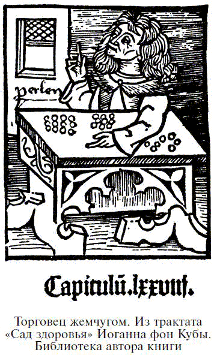

О талисманах и амулетах из драгоценных камней

Использование драгоценных камней в качестве амулетов и талисманов упоминается во многих древних рукописях, и, как полагают некоторые ученые, именно из-за веры в волшебное могущество камней их чаще использовали как личные украшения. Конечно, сейчас очень сложно подтвердить или опровергнуть эту теорию, но даже в случае с самыми старыми текстами нужно принимать во внимание, что в них представлены отнюдь не первобытные условия. По этой причине некоторые исследователи предпочитали искать решение проблемы в обычаях и привычках так называемых нецивилизованных людей нашего времени; но нельзя забывать о том, что условия, кажущиеся нам рудиментарными, являются тем не менее результатом долгого процесса развития. Даже если это развитие остановилось сотни или тысячи лет назад, оно все же потребовало значительного периода времени, чтобы превратиться в обычаи, существование которых находят среди нецивилизованных рас. Действительно, многие нецивилизованные народы имеют очень сложные обряды и ритуалы, свидетельствующие о значительной работе мысли.
Фетишизм во всех его формах зависит от неполного понимания того, что представляет собой жизнь и сознательное существование. Воля и мысль относятся к неодушевленным объектам. Это можно наблюдать у животных и совсем маленьких детей, считающих живым любой движущийся предмет. В случае с камнями, возможно, их считали жилищами духов, добрых и злых, и отбирали по естественной форме, напоминающей животное или часть тела человека. С другой стороны, ношение того, что называется драгоценными камнями, скорее всего, обусловлено их яркими цветами, привлекающими взгляд к владельцу драгоценностей, и желанием иметь какой-нибудь отличительный признак. Эта тенденция просматривается в высшем царстве зверей, и работы по этим вопросам послужили основой теории естественного отбора.
Похоже, что в этом заключается правдивое объяснение мотивов приобретения, хранения и ношения драгоценных камней. Так как сами по себе эти предметы неподвижны, они вряд ли внушали первобытным людям мысль о том, что они являются живыми существами; они не впечатляли своей массой, как большие камни, и вряд ли напоминали животное своей кристаллической формой. Скорее древних привлекал в драгоценных камнях только цвет и блеск. Вывод о том, какой эффект они производили на первобытных людей, можно сделать, наблюдая за маленькими детьми. Ребенок не пугается маленького, блестящего цветного предмета, который ему показывают, и с удовольствием протягивает руку, чтобы потрогать, подержать, рассмотреть яркий цветной камень. Так как предмет совершенно инертен и прост в обращении, у ребенка нет особых оснований предполагать наличие в нем какой-то скрытой власти, способной принести вред, и, таким образом, ничто не нарушает приятного ощущения, возникающего в зрительном нерве малыша от игры цвета. В этом наивном восхищении блестящими и цветными предметами ребенок, без сомнения, является для нас примером умственного восприятия первобытного человека.
Возможно, первые предметы личных украшений легко нанизывались или связывались друг с другом, например раковины с отверстиями, блестящие семена, мягкие камни, в которых с помощью простейших инструментов легко проделывались дырочки. Более твердые камни, прежде чем их стали использовать для украшений, сохранялись как красивые игрушки.
Бесспорно, когда камни стали надевать, появилась склонность соотносить те или иные события с их властью и влиянием. Таким образом, усилилась вера в их силу и, наконец, появилось убеждение, что в камнях живут могущественные духи. В этом случае, как и во многих других, первая инстинктивная человеческая оценка была самой верной, но потребовалось несколько веков просвещения, чтобы вернуть нам любовь к драгоценным камням только за их эстетическую красоту. Действительно, даже сегодня мы можем наблюдать власть слепых предрассудков в случае с опалом, который некоторые робкие люди едва осмеливаются носить, хотя три или четыре века назад этот камень считался сочетающим в себе все достоинства различных цветных и драгоценных камней, оттенки которых объединяются в его блеске.
Подтверждением тому, что первобытные люди собирали и хранили яркие цветные предметы просто из-за их привлекательности, служит тот факт, что некоторые птицы небезразличны к камням. Например, достопримечательность Австралии – хламудера, похожая на ворона, после обустройства своего гнезда разбрасывает по земле пеструю гальку, напоминающую мозаичный узор. У входа накапливаются груды мелких костей, раковин, перьев и камней, принесенных зачастую издалека и свидетельствующих о том, что они собирались птицей не наугад. Странно, что эту чисто зрительную привлекательность блестящих и цветных предметов, легких и удобных в обращении, упускают из виду те, кто склонен считать, что все подобные украшения отбирались и хранились только из-за предполагаемых талисманных качеств.
Теория о том, что цветные и блестящие камни отбирались и хранились человеком скорее за их красоту, а не как талисманы, подтверждается и сообщением о том, что тюлени очень тщательно отбирают гальку, которую затем проглатывают. Считается, что камешки халцедона и змеевика (серпентина), которые находили в местах тюленьих лежбищ, были выплюнуты тюленями.
Популярная версия происхождения слова «амулет» от арабского hamalat, означающего «нечто подвешенное, носимое», не принимается лучшими арабскими учеными; возможно, оно имеет латинское происхождение, несмотря на то что нельзя найти полностью удовлетворяющей этимологии. У Плиния употребление слова amuletum не всегда означает предмет, носимый человеком, хотя позже оно приобретает это значение. Старая этимология, предлагаемая Варроном,[13] относит amuletum к глаголу amoliri— «устранять, удалять, уносить». Возможно, это значение не совсем согласуется с современной филологией, но имеет все же некоторое смысловое сходство, так как амулет отводит или устраняет опасность. Слово «талисман», которое не использовалось в классические времена, без сомнения, происходит от арабского tilsam, которое, в свою очередь, берет начало от ???????, значившего у поздних греков «посвящение» или «заклинание».
Отмечено, что от раннего каменного века не осталось следов каких-либо идолов или образов; нам мало известно об искусстве этого периода. В позднем каменном веке доминирующее влияние приобрели совсем другие идеи, и большинство предметов пластического искусства имело религиозное значение. Это очевидно вытекает из представления о том, что каждый образ живого предмета поглощает часть сущности этого предмета, и такое представление, хотя и примитивное, все же несет в себе элемент развития. Это правило в основном применялось к амулетам, которые затем украшались, насколько это позволяло первобытное искусство, дабы быть достойным жильем добрым духам, оживляющим их и дающим силу.
В коллекции синьора Джильоли есть любопытный идол из Хуаилу, Новая Каледония. Это – каменная фигурка, имеющая грубое сходство с человеческим органом. Легко понять, что этот предмет считался обителью духа и, по мнению людей более цивилизованных, чем аборигены Новой Каледонии, должен был внушать суеверное благоговение подобным племенам.
На протяжении Средних веков, вплоть до XVII столетия, в талисманные свойства драгоценных камней верили высшие и низшие, принцы и крестьяне, образованные и невежды. Однако оттенок скептицизма проявлялся и у тех и у других. Например, придворный шут императора Карла V на вопрос «Какими свойствами обладает бирюза?» дал знаменитый ответ: «Хм, ну, я думаю, если бы вам случилось упасть с высокой башни и в тот момент у вас на пальце был бы перстень с бирюзой, то камень остался бы цел».
Считалось, что материал некоторых камней подвержен изменениям в зависимости от состояния здоровья и поведения владельца. В случае болезни или приближения смерти камни тускнеют, темнеют яркие цвета; измена или вероломство производят тот же эффект. Что касается бирюзы, объяснение может быть вполне прозаическим: камень подвержен определенному влиянию кожной секреции; но из-за популярного суеверия то же приписали и рубину, и алмазу, и другим камням, на самом деле не обладающим такой чувствительностью. Подобным образом можно дать объяснение распространенной идее о существовании скрытой симпатии между камнем и хозяином. Удачно отражена эта идея Эмерсоном[14] в строках из его «Амулета»:
Дай мне амулет,
хранящий твои мысли, —
Красный или розовеющий, когда ты любишь,
а когда не любишь, бледный и голубой.
Персидская легенда о происхождении алмазов и драгоценных камней гласит, что на Востоке на эти прекрасные предметы смотрели как на источник великого греха и печали. Утверждалось, что, когда Бог сотворил мир, он не создал таких бесполезных вещей, как золото, серебро, драгоценные камни и алмазы; но Сатана, всегда стремившийся посеять зло среди людей, пристально следил за желаниями и страстями человеческого разума. К своему великому удовольствию, он заметил, что Ева страстно любит красочные цветы, растущие в садах Эдема, и попытался имитировать их цвета и яркость вне земли – так появились драгоценные камни и алмазы. Впоследствии жадность и алчность, вызываемые ими, стали причиной многих несчастий и преступлений.
Если бы люди захотели признаться в своих настоящих верованиях, век нынешний представил бы нам столько же примеров веры в амулеты, сколько и любая другая эпоха. Но ложная стыдливость мешает человечеству до конца постичь истинный смысл этих предметов. Мы, скорее всего, улыбнемся, услышав, что многие из солдат Австро-прусской войны 1866 года носили на себе амулеты и что великий маршал времен Крымской кампании Канробер[15] верил в их оберегающую силу. И конечно, русская армия во время Русско-японской войны была обильно снабжена амулетами – оберегами, образками и иконками, освященными и потому наделенными особой силой.
Во всех этих случаях не сам по себе предмет, но идея, которая за ним стоит и которую он несет в себе, дает веру его владельцу, и в этом смысле ношение талисмана уже не является подтверждением слепого суеверия. Тенденция придавать материальную, видимую форму абстрактной идее так глубоко уходит корнями в человеческую природу, что должна рассматриваться как удовлетворение человеческих нужд. В редком случае мы довольствуемся чисто интеллектуальной концепцией, она должна иметь какую-то внешнюю, ощутимую и видимую форму, чтобы производить больший эффект.
Хотя при поверхностном рассмотрении такая точка зрения походит на фетишизм, использование знаков и символов есть нечто абсолютно иное. Зная, что символ сам по себе ничто, мы так же знаем, что он имеет реальную силу при соотнесении его с идеей, которую он олицетворяет, и так же чувствительны к повреждению или уничтожению памятного предмета, как к смерти любимого человека.
Какое сверхтонкое чувство делает некоторых женщин способными наделять свои драгоценные камни индивидуальностью, заставляет почувствовать, что эти холодные, безжизненные предметы играют какую-то роль в человеческих эмоциях? Жена французского писателя мадам Катюль Мендес рассказывает, что носит столько колец, сколько возможно, так как камни обижаются, когда ими пренебрегают. Она продолжает:
«Мой рубин тускнеет, две бирюзы бледнеют, как смерть, аквамарин становится похожим на глаза сирены, наполненные слезами, когда я слишком долго не вспоминаю о них. Как было бы грустно, если бы камни не любили покоиться на моем теле».
В 1909 году в месторождениях опала в Австралии был найден очень красивый и любопытный предмет. Это – скелет рептилии, похожий на небольшую змею, превратившийся в опал под влиянием естественных процессов. Совершенный во всех деталях, наделенный поразительной игрой цвета, этот образец работы Природы обладает красотой, превосходящей все изделия человеческих рук. Как амулет он, конечно, своеобразен и в древние времена стоил бы невероятно дорого. Фигурка змеи была излюбленным символом медицины; даже сейчас нет сомнений, что за этим странным предметом будут охотиться коллекционеры, и особенно привлекателен он будет для тех, кто интересуется оккультными науками, ценит поэтическое и, быть может, мистическое значение формы, знака и символа.
Невозможно переоценить значение цвета в определении предполагаемого влияния камней на судьбы или здоровье его владельцев. Когда вглядываемся в великолепную игру цвета прекрасного рубина или сапфира, мы полностью осознаем производимый эстетический эффект; но в ранние времена, когда научные идеи еще не были доминирующими, существовало множество мнений, призванных придать определенное значение блестящим камням. В силу их редкости и дороговизны предполагалось, что они обладают мистической и оккультной силой и являются жилищами духов, иногда добрых, иногда злых, но всегда наделенных властью влиять на людские судьбы в счастье и в горе.
К этому добавлялась инстинктивная оценка основных качеств некоторых световых лучей, которым современная наука, далекая от этих идей, кажется, уже нашла достойное объяснение. Нам хорошо известно терапевтическое действие ультрафиолетовых лучей, но для неподготовленного сознания они казались воплощением чистоты и целомудрия, при этом некоторые догадывались и об их целебности. В то время страсть ассоциировалась с красным сияющим рубином – концепция, относительная достоверность которой была продемонстрирована специальным анализом, показавшим, что красные лучи излучают тепло и энергию. Но это не являлось единственным источником примитивных идей в отношении цвета; терапевтический эффект часто пытались извлечь из забавного сопоставления цвета камня и характера заболевания. Так, предполагалось, что при лечении желтухи очень помогают желтые камни – пример инстинктивной гомеопатии по принципу simila similibus curantur (подобное лечится подобным). Красные камни наделялись способностью останавливать кровотечение; в этих случаях рекомендовалось применять так называемый кровавик. Считалось, что одно лишь его прикосновение способно прекратить самое сильное кровотечение. Зеленый цвет считался наиболее благоприятным для зрения, поэтому целительная сила в этом случае приписывалась изумруду и другим зеленым камням. Впоследствии простое влияние цвета стали связывать с его символическим значением. В языческой мифологии это отражается в приписывании изумруда Венере как представительнице репродуктивной энергии природы, в то время как в христианской концепции он стал символом воскрешения, возрождения к новой, лучшей жизни. Нигде не найти лучшего примера трансформации различных и диаметрально противоположных концепций о воздействии природных объектов. Чистые, бесцветные и блестящие камни, такие как алмаз и другие белые камни, связывались, естественно, с Луной, хотя алмаз из-за своих высочайших качеств, исключительного блеска и ценности часто называли «камнем Солнца». Все камни, ассоциирующиеся с Луной, несли и оттенок ее загадочности. Светящая в полночный час Луна, когда власть принадлежит злым и коварным духам, иногда казалась зловещей, поэтому лунатизм связывали с влиянием лунного света; в других случаях предполагалось, что она способна изгнать злых духов и власть тьмы.
О символическом значении цветов драгоценных камней подробно рассказывает Джачинто Джимма, собравший огромное количество материала по этому вопросу.
Желтый цвет, носимый мужчиной, означал тайну и был присущ тайным воздыхателям; носимый женщиной – указывал на великодушие. Золотисто-желтый оттенок был, конечно, символом Солнца и относился к воскресенью. Драгоценными камнями этого цвета являлись хризолит и желтый гиацинт, животным этого цвета был лев, без сомнения – по ассоциации с зодиакальным знаком Льва и летним солнцем. С семилетнего возраста желтый цвет олицетворял юность. Римские матроны покрывали свои головы желтой вуалью, показывая свою надежду на потомство и счастье. Так как одежды этого цвета были знаком величия и аристократизма, золотой наряд как знак ее превосходства принадлежал Царице Небесной; читаем в Псалме XLV, 9: «Стала царица одесную Тебя в Офирском золоте». Джимма относит эти слова к описанию Девы Марии в соответствии с католическими толкованиями Библии того времени.
Белый цвет означал: для мужчин – дружбу, религиозность, цельность натуры; для женщин – созерцание, приветливость и чистоту, он ассоциировался с Луной, понедельником и был представлен жемчугом. Животным, имеющим отношение к белому цвету, считался, несомненно, горностай, числом – мистическая семерка. Белый цвет олицетворял младенчество. У древних белый был цветом траура и печали, и греческие женщины облачались в белое после смерти своих мужей. Джимма утверждает, что и в его время в Риме вдовы обычно носили белое как траур по мужьям, а по всей Италии белая лента вокруг головы была знаком вдовства.
Красные одежды на мужчинах указывали на господство, знатность, аристократизм и мстительность; на женщинах – означали гордость, упрямство, высокомерие. Это был цвет Марса и вторника. Из камней он был представлен рубином.
Сложно понять, почему из животных для него была выбрана именно рысь, но не вызывает удивления выбор этого самого живого цвета в качестве символа полного возмужания. Его число – могущественная девятка, тройка, умноженная на саму себя. Древние покрывали красным полотном гробы погибших в борьбе, как пишет Гомер, рассказывая о братьях и соратниках Гектора, накрывших урну с пеплом героев мягкой пурпурной тканью. Плутарх утверждал, что лакедемоняне одевали своих солдат в красное, чтобы посеять страх в сердцах врагов и вызвать у воюющих жажду крови. Сегодня то же самое можно сказать и об английских «красных плащах» (форма английских солдат). Итальянский уголовный кодекс, известный под названием Digesto Nuovo, имел красный переплет, означая, что воров и убийц ожидает кровавая смерть.
Голубой цвет в мужских одеждах означал мудрость, высокие и великодушные мысли; в женских – ревность в любви, учтивость и бессонницу. Его представляли пятница и Венера, число – шесть, а также сапфир – камень, в котором этот цвет проявлялся во всей красе. Голубой был символом детства. Менее понятен выбор козы как животного, ассоциирующегося с ним. Естественные науки, созерцание небес и небесных тел, изучение влияний звезд – все это относилось к голубому.
Зеленый цвет означал: для мужчин – довольство, мимолетную надежду, ухудшение дружеских отношений; для женщин – необоснованные амбиции, детское восхищение и переменчивость. Быстро проходящая ранняя зелень может считаться как символом надежды, так и символом возможного разочарования. С зеленым связывались Меркурий и среда – день Меркурия, магическое число 5, хитрая лиса – олицетворение коварного идола, возраст юности и типичный зеленый камень – изумруд. В древние времена зеленый цвет использовался в случае смерти в расцвете лет, и кольцо с зеленым изумрудом надевалось на палец умершего как знак угасшего света надежды. Рукоятки факелов в религиозной церемонии были отмечены зеленым. Фулвий Пеллегрини пишет, что в могиле Туллии, горячо любимой дочери Цицерона, был найден один из наикрасивейших изумрудов. Он перешел в руки Маркезаны ди Мантова, Изабеллы Гонзаго да Эсте. В Италии могилы девушек и детей накрывались зелеными ветвями. Когда Кодекс Юстиниана был заново открыт и добавлен к другим Пандектам,[16] он был переплетен в зеленый цвет в знак обновления прав.
Черный цвет означал: для мужчин – серьезность, здравый смысл, постоянство и силу духа; для девушек – непостоянство и безрассудство, но для замужних женщин – постоянную любовь и упорство. Сатурн и суббота были отмечены этим цветом. Предполагалось, что число 8 – дважды четыре – имело с ним некоторое соответствие. Как ни странно, алмаз, преимущественно светлый камень, стал представителем этого мрачного оттенка. Возможно, в качестве компенсации из животных был выбран кабан. Так как черный является траурным цветом, стоит ли удивляться, что он был символом дряхлости и ветхости? Это был также символ зависти, злых мыслей, очерняющих душу и заставляющих страдать тело. Свод правил о порядке ведения дел, касающихся смерти, имел черный переплет. Зловещее значение этого цвета хорошо иллюстрирует притча о безжалостном Тамерлане. При взятии одного из городов он приказал поставить себе белую палатку в первый день осады в знак того, что жители будут помилованы, если немедленно покорятся. На второй день была установлена красная палатка, что означало: если город сдастся в плен, всех вождей ждет смерть. На третий день была разбита черная палатка как зловещий знак: пощады не будет никому, всех жителей ждет порабощение.
Фиолетовый цвет для мужчин означал трезвость ума, трудолюбие и серьезность, для женщин – высокие мысли, религиозную любовь. Это цвет Юпитера и четверга. Сапфир был выбран для того, чтобы (наряду с голубым) представлять и этот цвет. То, что животным этого цвета стал бык, объясняется мифологической связью с Юпитером и, возможно, связано с мифом о Европе и быке. Фиолетовый считался цветом старости и связывался с числом 3.
Влияние цвета на нервную систему было отмечено некоторыми из ведущих специалистов по гипнозу. Например, доктор Поль Фере открыл, что красный свет оказывает стимулирующее, а голубой и фиолетовый – успокаивающее воздействие, и предлагал тем, кто лечит пациентов с помощью гипноза, иметь две комнаты для приема пациентов, в одной из которых шторы, обои, мебельная обивка и т. п. были бы красного оттенка, а в другой – фиолетово-голубого. Страдающих безразличием, вялостью или депрессиями следует принимать в красной комнате, а перевозбужденных пациентов – в голубой. Более того, согласно доктору Фере, успокаивающие качества фиолетово-голубого могут быть использованы при погружении человека в гипнотическое состояние. С этой целью он рекомендовал фиолетово-голубой диск, быстро вращающийся перед глазами пациента.
Красные камни, такие как рубины, карбункулы и гранаты, чей цвет ассоциируется с кровью, считались наделявшими неуязвимостью, некоторые азиатские племена использовали их как пули, исходя из обратного принципа: кроваво-красные камни скорее могут нанести смертельный удар, чем обычная пуля. Такими пулями пользовались мятежники Ханза в 1892 году, во время войны с британскими войсками на границе Кашмира, и многие из этих драгоценных снарядов были сохранены как антиквариат.
В своем «Рассказе о паломничествах» Эразм Роттердамский устами одного из героев спрашивает: «Разве не видишь ты, как Творец – Природа наслаждается, наделяя все цветом и формой, в особенности восхищаясь драгоценными камнями?» Затем он перечисляет различные образы природных явлений, отраженных в камнях. От громовых камней появляется гром и молния, от пиропа – живой огонь, а горный хрусталь, даже брошенный в огонь, сохраняет форму и прохладу градины. В изумруде отражаются глубокие и переливающиеся волны моря, карциния имитирует форму крабов, эхитес – змей, хирацитес – ястребов, геранитес – журавлей, этитес напоминает орла с белым хвостом, таос – павлина, хелонитес – аспида, мирмекитес содержит внутри фигурку муравья – камни с этими названиями были, вероятно, образцами янтаря с попавшими внутрь муравьями.
Греческие названия этих камней, перечисленные Эразмом, означают их реальное или воображаемое соответствие некоторым реальным предметам или их характеристикам. Многие из них были окаменелостями, сохранившими форму каких-то живых организмов; другие получили свои имена благодаря легендам или мифам, отражавшим их достоинства, как в случае с этитом (орлиным камнем), найденным якобы в орлином гнезде. Очевидно, это была кварцевая галька.
Старейшие магические формулы, сохранившиеся до нашего времени, – заклинания шумеров, основателей древнейшей вавилонской цивилизации. В некоторых из них есть упоминания о драгоценных камнях – амулетах, как, например, в следующем отрывке:
«Нити светлой шерсти чистыми руками приложить к больному глазу и завязать с правой стороны. Чтобы глаз не воспалился, надеть больному на мизинец левой руки кольцо со сверкающим камнем, привезенное из его страны».
Любопытный вавилонский мифологический текст повествует о солнечном Нинибе, сыне Бела, определявшем судьбы различных камней своим благословением или проклятием. Например, доломит получил благословение и был объявлен подходящим материалом для королевских статуй, в то время как минерал, именуемый элу-камнем, был проклят, объявлен негодным для работ и обречен на разрушение. Алебастр снискал Божью милость, а халцедон вызвал гнев и был приговорен.
В этих шумеро-ассирийских записях упоминается также два камня: aban rame и aban la rame, «камень любви» и «камень неприязни». Очевидно, древние верили, что эти камни способны вызывать одно или другое из этих противоположных чувств в сердцах их обладателей; их можно сравнить с камнями памяти и забвения.
В древнем египетском захоронении в Карнаке при раскопках была найдена мумия молодой женщины. По ее украшениям совершенно очевидно, что она была знатного происхождения, исключительно красива и умерла в расцвете лет. Волосы были красиво уложены и украшены двадцатью бронзовыми заколками. На шее – великолепное ожерелье, с бусинами в четыре ряда и многочисленными подвесками в виде божеств и священных символов; два меньших ожерелья с бусинами из золота, ляпис-лазури и сердолика; в уши вдеты две большие драгоценные серьги в виде колец, а на указательном пальце – кольцо со скарабеем. Вокруг талии – золотой пояс, украшенный ляпис-лазурью и сердоликом, а на левом запястье – золотой браслет с полудрагоценными камнями. В саркофаге было найдено зеркальце из позолоченной бронзы и три гипсовые вазы, в одной из которых сохранились остатки какого-то бальзама или духов, в другой – свинцовый блеск (сульфид натурального свинца), использовавшийся как косметика для глаз, так же как и маленький эбеновый карандаш. Все эти предметы сейчас находятся в египетской коллекции Берлинского музея и принадлежат, скорее всего, к периоду XVIII династии, около 1500 года до н. э.
Большое ожерелье, без сомнения, считалось египтянами могущественным амулетом, но ему не удалось уберечь свою хозяйку от преждевременной кончины; возможно, его свойства помогли ее душе пройти испытания загробного мира. Многочисленные подвески придавали ожерелью свойства амулета: три фигурки бога Беса из сердолика; семь фигурок бегемота-богини Таурт – тоже из сердолика и две из ляпис-лазури – сердечко и кот; четыре сокола из сердолика; фигурки крокодила, одна из сердолика и две из ляпис-лазури; четыре рыбки из сердолика и две других из черно-белого и зеленого камней; два скорпиона и семь цветков из сердолика. Большая часть бусин в ожерелье – из золота, электрума,[17] слоновой кости и ляпис-лазури имеют кольцеобразную форму. Некоторые кольцеобразные и сферические бусины из сердолика, хризопраза и малахита достигают диаметра 3,5 см.
Ожерелье времен Древнего царства (3500 г. до н. э.), украшенное в основном подвесками из бирюзы в виде каменных козликов, было найдено в Абусир-эль-Мелеке в 1905 году. Это ожерелье, части которого были найдены на шее предположительно молодого мужчины, состояло из округлых или кольцеобразных бусин из сердолика и раковин, из плоских, перфорированных кусочков бирюзы и миндалевидных гранатов, а также аметиста ромбовидной формы размером 1,7 Ч 1,4 см. Основное украшение – бирюзовый козел длиной 1,7 см и высотой 0,9 см. Это изображение наводит на мысль о его сходстве с формами животного и птицы, изготовленными из бирюзы и найденными в индейских могилах в Аризоне и Нью-Мексико. По всей видимости, они были чем-то вроде фетиша или по крайней мере талисманом, хранившим владельца ожерелья от напастей.
В Египте для таких амулетов чаще всего использовали только определенные камни, что можно заметить из записей, сделанных в специальных разделах Книги мертвых. Это же касается и формы амулетов. Например, амулет, охраняющий голову владельца, обычно изготавливался из гематита в форме квадрата. Из сорока семи «сердечных» амулетов в огромной коллекции музея Каира девять изготовлены из сердолика, четыре – из гематита, два – из ляпис-лазури и два – из зеленого порфира и зеленой яшмы, что свидетельствует о том, что среди драгоценных камней сердолик пользовался наибольшей популярностью. В этой коллекции в изобилии представлены амулеты в форме животных. Там есть бегемот, крокодил, лев, бык, корова, заяц, обезьяна с собачьей головой, кот, собака (нечто сомнительное), шакал, еж, лягушка, ястреб, кобра и рыбы. К этому списку можно добавить четырехголового барана и сфинкса с бараньей головой.
Некоторые амулеты специально предназначались для мореплавателей, особенно в древние времена. Все, кто уходил в море, хотели защитить себя на своих маленьких суденышках от неистовства стихии. Отрывок из греческого «Лапидария», написанного, возможно, в III или IV столетии н. э., перечисляет по крайней мере семь амулетов, специально предназначенных для этих целей. Возможно, их количество связано с днями недели, и амулет считался наиболее действенным в отведенный для него день.
Первый состоял из карбункула и халцедона – он охранял моряка от крушения. Второй амулет изготавливался из двух разновидностей твердых минералов – один, македонский, походил на лед (возможно, это был горный хрусталь), тогда как другой, индийский, имел серебристый оттенок (скорее всего, это был наш корунд); из них македонский ценился больше. В третьем амулете использовался берилл, «прозрачный, блестящий, оттенка морской волны» – очевидно, голубой берилл – он прогонял страх. В четвертом был «друопс», белый в центре, скорее всего – разновидность агата, оберегавший от сглаза. В пятый амулет вправлялся коралл и прикреплялся к носу корабля полосками из тюленьей кожи – он охранял корабль от волн и ветров во всех водах. Для шестого амулета был выбран камень «офиокиолус», вероятнее всего – полосчатый агат, про который говорилось, что он опоясан полосами и похож на змею, и тот, кто его носил, уже мог не опасаться бурного океана. Седьмой и последний из этих «морских» амулетов имел камень с названием «опсианос», очевидно из смолистого или битумного материала, возможно разновидность гагата (черного янтаря); он появился из Фригии и Галатии[18] и считался надежной защитой для морских или речных путешественников.
Древние трактаты о магическом искусстве говорят, что те, кто осмеливается вызывать духов потустороннего мира, обязательно должны пользоваться амулетами, иначе они рискуют оказаться в их власти. В одном из этих текстов даются указания по изготовлению амулета для мастеров похоронных дел. Берется камень со «сладким запахом», вырезается в форме сердечка, и на нем гравируется фигурка Гекаты.[19]
Дорогой китайский амулет состоял из алмаза, рубина и изумруда, к которым добавлялись жемчуг и коралл; восточный сапфир и топаз приравнивались к рубину. Считалось, что амулет с таким набором камней объединяет защитное влияние различных божеств, управляющих ими, и продлевает жизнь его обладателю. Иногда пять основных драгоценных камней заворачивали в бумагу, на которой писались имена соответствующих божеств, а также название Луны и двадцати семи созвездий, или домов Луны. Такой амулет, прикрепленный у входа в дом, предназначался для защиты его обитателей.
На языке древних мексиканцев кровь называлась водой драгоценных камней как квинтэссенция всего, что считается самым драгоценным. Хотя эти поэтические образы в наши дни всего лишь красивые обороты речи, для первобытных людей они имели большое значение. Весьма вероятно, что ацтеки, как и другие древние народы, носившие драгоценные камни, верили, что они очищают кровь, способствуют здоровью и силе, так как «кровь – это жизнь». Факт, что камни имеют половую принадлежность, утверждали как самые древние писатели, так и многие из их последователей. По-видимому, это был поэтический способ указать на цветовые оттенки камней: более темные разновидности считались мужскими, более светлые – женскими. Теофраст[20] рассказывает, что иногда эти различия не безосновательны: он заявляет, что, каким бы удивительным это ни казалось, некоторые камни способны производить потомство.
Эта странная идея была распространена даже в XVI веке, и этому феномену давали самые изощренные толкования, как, например, в следующем отрывке автора Руэ (1566 г.) о размножающихся алмазах:
«Об этом случае мне рассказала дама, принадлежащая к одному из знаменитых семейств Люксембурга и вполне заслуживающая доверия. У этой дамы было два бриллианта, доставшиеся ей по наследству. Они каким-то загадочным образом производили другие, и, кто бы ни осматривал их, через определенное время подтверждали, что камни производят подобных себе потомков. Причина этого (если она приемлема для философствования в этом странном случае), казалось, заключается в том, что небесная энергия в родственных камнях, определяемая некоторыми как „несокрушимая сила“, сначала превращает воздух в воду или похожую субстанцию, которая после конденсации затвердевает в бриллиант».
Говорят, что ловцы жемчуга с Борнео тщательно защищают каждую девятую найденную жемчужину, помещая ее в бутылочку с двумя зернышками риса на каждую жемчужину, и верят, невзирая на все свидетельства обратного, что эти отдельные жемчужины произведут потомство. Обычай и суеверие требуют, чтобы каждая бутылочка затыкалась пальцем мертвого мужчины.

Талисманные влияния учитываются при ношении драгоценностей на Востоке. Два браслета часто носились, чтобы один орган не ревновал к другому, нарушая этим равновесие всего организма. Прокалывание ушей под серьги связывалось с желанием наказать ухо за его нескромное подслушивание секретов, а дорогие серьги-украшения вставлялись в уши, чтобы утешить их страдания, причиненные прокалыванием. Ожерелья из блестящего металла с подвесками из переливающихся камней предназначались для привлечения взгляда и защиты от таинственных и опасных влияний сглаза; то есть ожерелье или его украшения должны были играть ту же роль, что и громоотвод при электрическом разряде.
В давние времена христианская церковь заносила в списки своих противников тех, кто носил амулеты. На Лаодикийском[21] соборе в 355 году н. э. в 34-м каноне было установлено: священники и слуги не должны быть ни математиками, ни волшебниками, ни астрологами. Они не должны делать то, «что зовется амулетами», так как последние являются оковами души и носящий их отлучается от церкви. Этот эмфатический приговор был не столько протестом против предрассудков per se (в чистом виде – лат.), сколько протестом против языческих суеверий, так как почти все использовавшиеся ранее амулеты имели языческие или еретические символы или надписи. Позже неискоренимая тенденция носить предметы такого рода нашла выражение в использовании символов, ассоциирующихся с христианской верой, таких как реликвии святых, медальоны, благословленные священником, и пр.
Амулеты иудеев во многом отличались от христианских. Запрет отражения образов животных или человека в мозаиках наложил большие ограничения и на использование гравированных камней. Иудей мог надевать или носить только образы мистического или символического значения. Во времена Талмуда амулеты иногда прятались в полых жезлах, наделяя их, как считалось, большой властью. Они напоминали спрятанное оружие, и считалось: как отец может передать такой амулет сыну, так и Бог дал Закон Израилю для его защиты.
В средневековой французской дидактической поэме «Роман о розе», написанной в XII веке, проявляются следы веры в магические свойства драгоценных камней. Чосер[22] перевел эту поэму на английский язык в XIV столетии, и мы цитируем несколько строк из его перевода. Он описывает костюм символического персонажа Риша:
У Риша пояс был,
На пряжке которого был камень —
свидетельство добродетели и символ могущества.
Этот камень служил любви
И, пока он держал его в руках,
Стоил всего золота Рима и Фризы.
Застежка,[23] сделанная достойным образом,
Была из драгоценного камня.
Она была так забавна и могущественна,
Что могла уберечь человека
От болезни и зубной боли.
На судебном процессе в 1232 году разбирали дело Хуберта де Бурга, верховного судьи. Одним из предъявленных ему обвинений было изъятие из английской казны исключительно драгоценного камня, обладавшего силой делать его владельца непобедимым в сражении, и передача его Левелину, королю Уэльса, врагу своего правителя Генриха III Английского (1207–1272). Возможно, это произошло в 1228 году, когда Генрих воевал с Уэльсом.
В Средние века свято верили, что драгоценные камни могли при определенных обстоятельствах терять свою волшебную силу. Если камень попадал в руки или даже на глаза нечистым или грешникам, то он лишался некоторых из своих свойств. Были и такие, кто считал, что драгоценные камни вместе со всем созданным были испорчены грехом Адама. Поэтому для восстановления их первоначальных свойств необходимо было очистить камни от порока и освятить. В некоторых старых трактатах сохранилось описание ритуалов для этих целей, что весьма забавно и заслуживает внимания. Камни, которым было необходимо очищение, заворачивали в совершенно чистую льняную ткань и помещали на алтарь. Над ними произносились три молитвы, и священник, служивший последнюю молитву, одетый в святые одежды, давал следующее благословление:
«С нами Господь и Дух его. Помолимся. Всемогущий Бог и Отец, доказавший свою силу Илия бесчувственным созданиям; приказавший Моисею, слуге его, украсить среди всех его святых одеяний нагрудник судный с 12 драгоценными камнями; показавший Иоанну Евангелисту знаменитый город Иерусалим, построенный на таких же камнях; обладающий властью поднять с камней сыновей Авраама. Мы смиренно просим Твое Величество, чтобы Ты благословил и освятил эти камни своим повелением и воплощением имени Твоего, как избрал Ты один из камней быть жилищем величия Твоего сердца; чтобы были они благословенны и святы и получили от Тебя те свойства, которыми Ты наделишь их в соответствии с их природой. Да отразят они данный им Тобой опыт излученного, чтобы любой мог носить их, чувствуя присутствие Твоей силы, и мог быть достойным получения дара Твоей благосклонности и Твоей защиты. Через Иисуса Христа, сына Твоего, в котором Твое благословение и концентрация, который живет с Тобой и правит как Бог вечности. Аминь. Возблагодарим Господа».
Конрад фон Мегенберг приводит такое же благословение в своей «Книге природы». Лютер рассказывает следующую забавную историю об иудее, продававшем амулеты:
«У иудеев было распространено колдовство, и колдуны думали: „Если колдовство удается, то это только нам на руку; если не удается, страдают христиане; но какое нам до этого дело?..“ Но герцог Саксонский Альберт был проницателен и хитер. Когда иудей предложил ему пуговицу, якобы защищавшую от ран, ударов и выстрелов, герцог ответил: „О иудей, я испытаю ее на тебе!“ С этими словами он подвел колдуна к воротам, повесил пуговицу ему на шею, вынул саблю и пронзил беднягу. „А ведь меня могла бы постичь та же участь“, – сказал герцог».
Рескин,[24] с его живым поэтическим проникновением в действие законов природы, увидел в образовании кристаллов влияние и «сердечной силы», и «постоянства цели». Таким образом, он, осознанно или неосознанно, пришел к согласию с древними фантазиями, отождествляющими личностные особенности человека с драгоценными камнями. Подобно индусам, считавшим, что кристаллы несовершенной формы приносят несчастье их владельцу, Рескин видел в этих кристаллах знак «врожденной безнравственности», если здесь можно использовать это выражение. О кристаллическом соединении такого типа он писал следующее:
«Непрозрачный, с грубой поверхностью и зубчатыми краями, искривленный кристалл ясно представляет человеческий образ дряхлости и бесчестья. Но самым худшим проявлением упадка и беспомощности является другой кристалл-паразит, меньшей формы, такой же нездоровый, вросший корнями в большой, проросший насквозь и вылезший с другой стороны или снизу в направлении, противоположном большому кристаллу. Это различие между кристаллами проявляется и в отношении чистоты субстанции. Нечистота последнего – в его воле или недостатке воли».